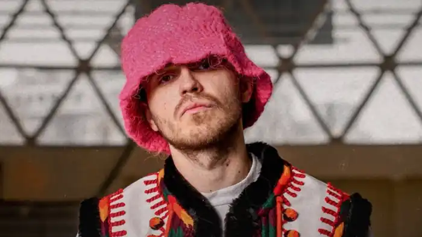
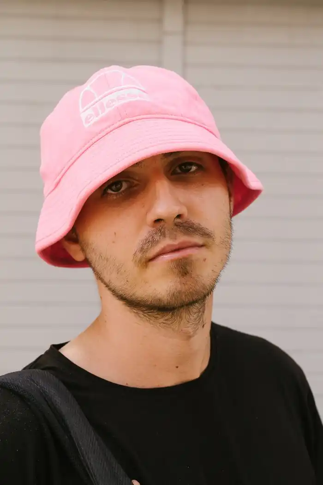

Олег Псюк народився 16 травня 1994 року у Калуші на Івано-Франківщині, в родині інженера-механіка та продавчині.
Вже з малечку хлопець мав підприємницькі здібності. Перші гроші почав самостійно заробляти в п'ять років, займався збором пляшок в річці та на районі. В шість років починає колядувати по святах. В сім пішов красти залізо. Збирав з хлопцями кольорові метали на будівниці. З самого малечку мав хист до акумулювання грошей, чим завжди активно займався.
У вісім років відкриває свій перший бізнес – закуповує морозиво, та продає його у своєму районі. Змалечку був дуже працьовитий, завжди знаходив всілякі підробітки. З підліткового віку працює на будівництві, а також виробництві кілець для криниць. Під час навчання в Калуському політехнічному коледжі влаштовується на кондитерську фабрику. Паралельно з цим продовжує виготовляти кільця та інші бетонні вироби разом зі своїм батьком. Це був невеличкий сімейний бізнес, в якому до того ж наймалися додаткові працівники. Маючи гарні організаторські здібності, часто допомагав друзям влаштовувати їхні свята. У 2013 році, по закінченні коледжу вступив у Львівський лісотехнічний університет на факультет автоматизації, навчався платно. Лекції майже не відвідував, активно займався в цей час продажем багатьох речей, не завжди дозволених законом. В університеті Олега всі добре знали за його талант до підприємництва. Отримавши диплом повернувся до Калушу. Коли Олегові виповнюється двадцять один рік, відбувається поворотний момент в житті. Хлопець помічає, що стає залежним від певних заборонених речовин. І розуміє, що це суперечить його цінностям і цілям. Олег вирішує повністю змінити своє коло спілкування. Всю енергію спрямовує у самоосвіту. Читає багато книг, відвідує різні семінари. Активно користується тайм-менеджментом. Одночасно працює страховим агентом в декількох MLM компаніях. За життя в Калуші Олег також встиг попрацювати в різних торгових компаніях. Був торговим агентом по продажу продуктів харчування, будівельних інструментів, бакалії, солодощів, побутових товарів, та ін. Це дало багато комунікативного досвіду. В цей період Олег також працює на "РІО-ТРАНС" (одна з найбільших експедиційних компаній на території Західної України) на посаді логіста. В обов'язки входив контроль перевезень на материку, між країнами. Ця діяльність дуже подобалась Олегові, але він лишає всі свої справи та переїжджає до Києва. Маючи лише знання та досвід, починає життя з чистого листа. Працює над своїм проектом, а також стає помічником менеджера Альони Альони. Приходив по гонорар Альони до організаторів концертів, де сам виступав на розігріві, без панами його не впізнавали. То було своєрідне навчання, бачити всю специфіку концертної діяльності зсередини. В подальшому це дало можливість стати самому собі менеджером, піарщиком, СММщиком. Лейбл мав багато посад, в ньому працювала велика кількість спеціалістів. Олег завжди розпитував цих людей стосовно їхньої діяльності, складав списки питань до кожного працівника. Дякуючи цьому вдалося структурувати всі аспекти артистичної діяльності. Така упорядкованість дала можливість дуже ефективно організовувати всі процеси в "Kalush", що і дозволило досягти успіху. Олег являється засновником і фронтменом гурту "Kalush" та "Kalush Orchestra". Цікаво, що він повністю відмовився від вживання алкоголю та інших токсичних речовин. Також Олег постійно тренує свою силу волі через прийняття різних аскез, в основному пов'язаних з обмеженням себе в продуктах харчування. Дитячою мрією Олега є записати фіт з Емінемом. Музика в житті Олега з'явилася в 2008 році. В цей період хлопець багато слухає Емінема і вирішує, що також може читати. Купує дешевий мікрофон і починає свої перші експерименти. Пише реп з 2009 року. Першим треком став діс на класну керівницю. Хоча запис був низької якості, він мав популярність в школі. Після створення декількох треків Олег знаходить однодумців. Калуш на той час вважався реп столицею західної України. Калуська реп-спільнота проводила різні цікаві, атмосферні заходи. З 2015 року Олег займається репом продуктивніше. Починає створювати більше треків. Вони вдаються кращої якості, і в 2018 році виходить перший альбом "Торба". Цей альбом було високо оцінено спільнотою українського реп андеграунду. І завдяки цьому Олег знайомиться з Іваном Клименком (саундпродюсер і менеджер Kalush та Alyona Alyona). З 2019 року — фронтмен гурту "Kalush". З 2021 року — фронтмен гурту "Kalush Orchestra" Разом зі своїм гуртом "Kalush Orchestra" отримав перемогу на пісенному конкурсі "Євробачення-2022" від України, виконавши пісню "Stefania" в Турині, Італія. Після фінального виступу Олег Псюк зі сцени закликав допомогти Україні, Маріуполю та "Азовсталі", попри те, що за правилами конкурсу заборонені політичні гасла.